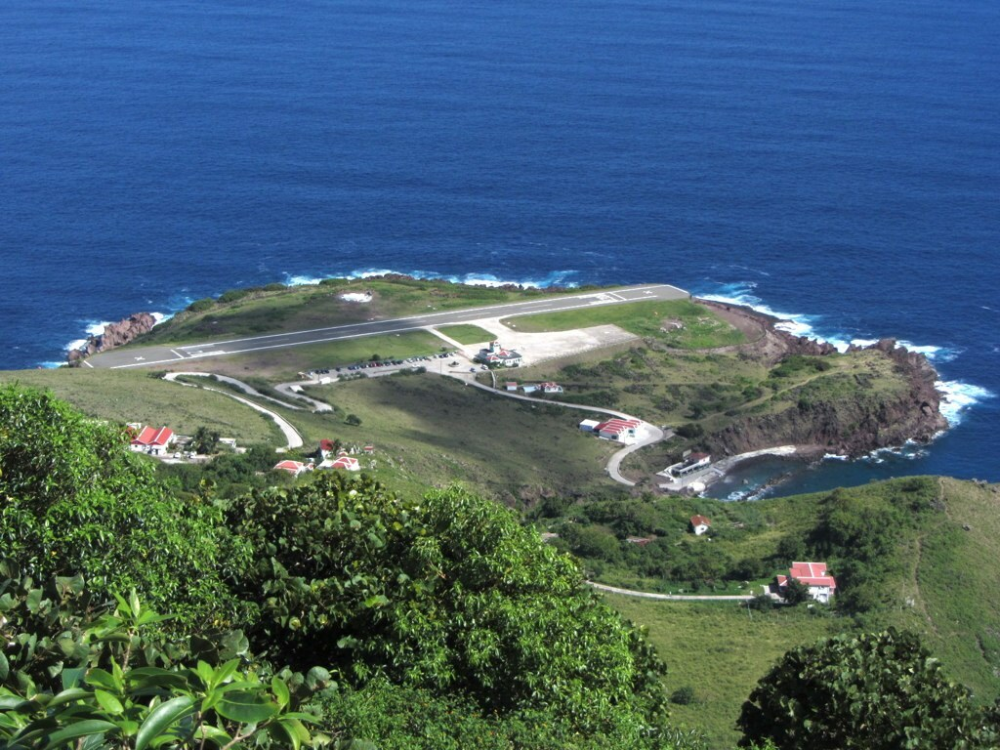
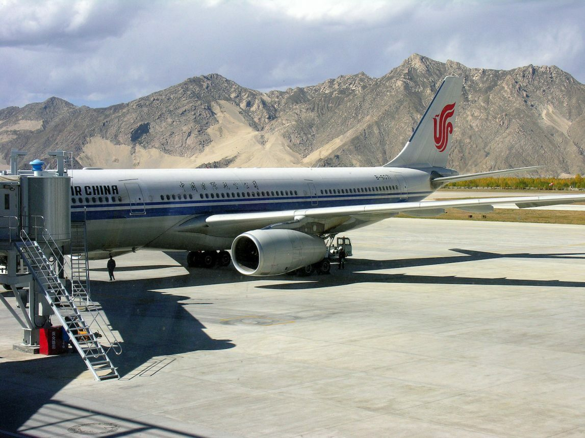
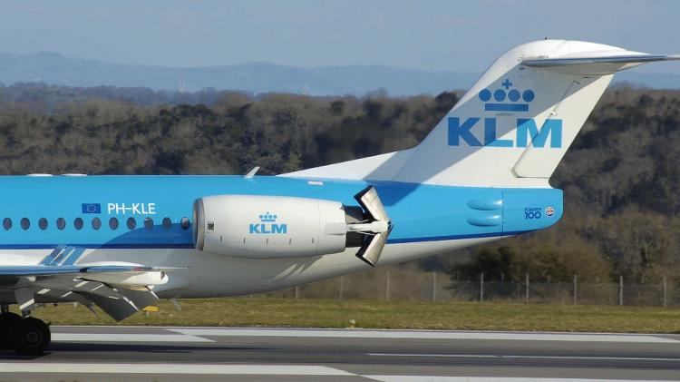
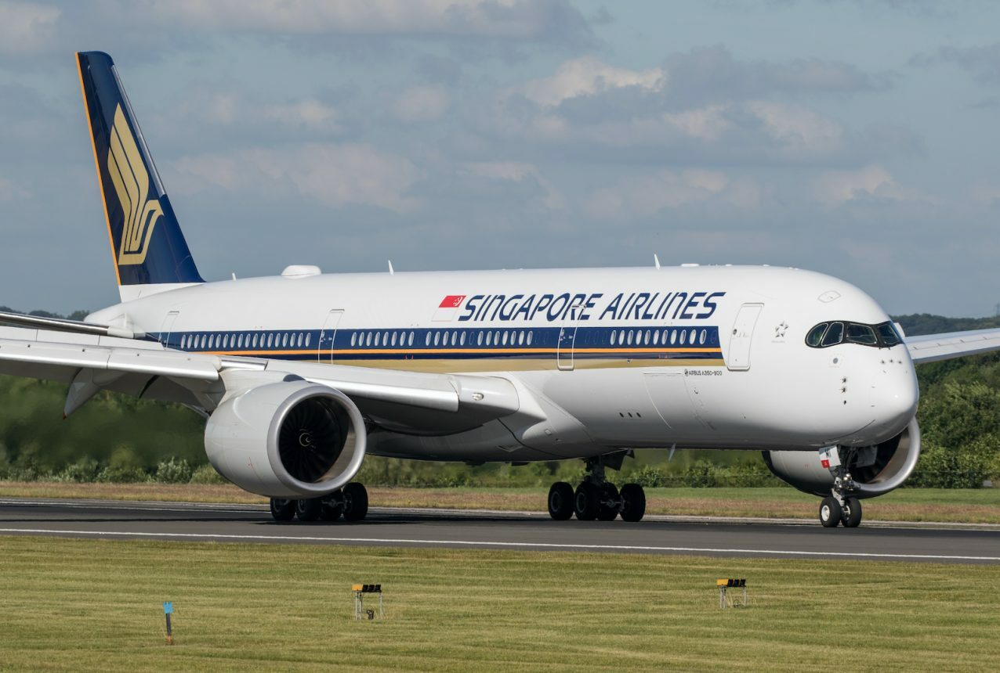
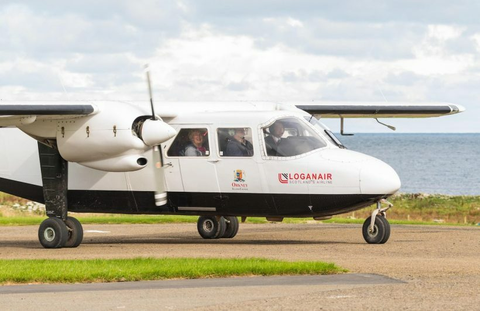
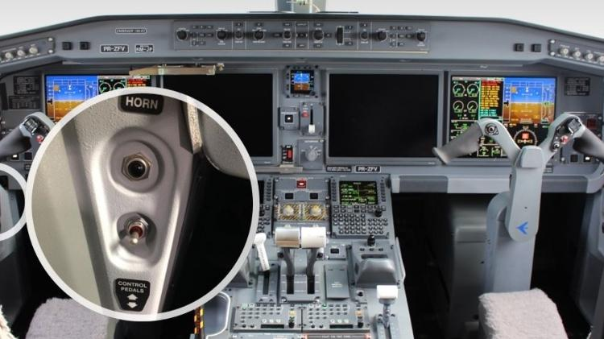
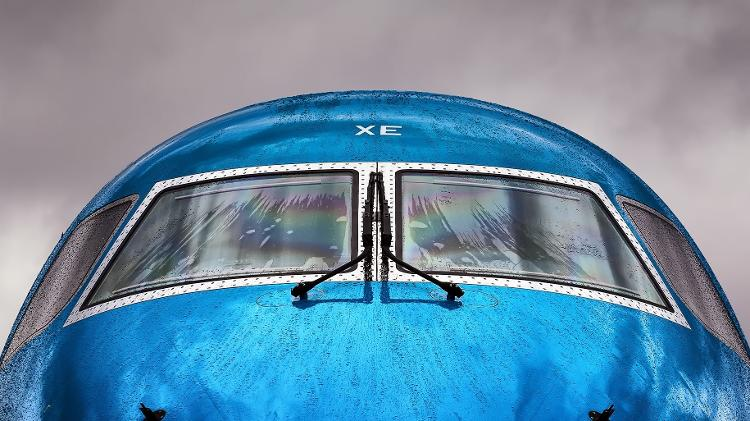
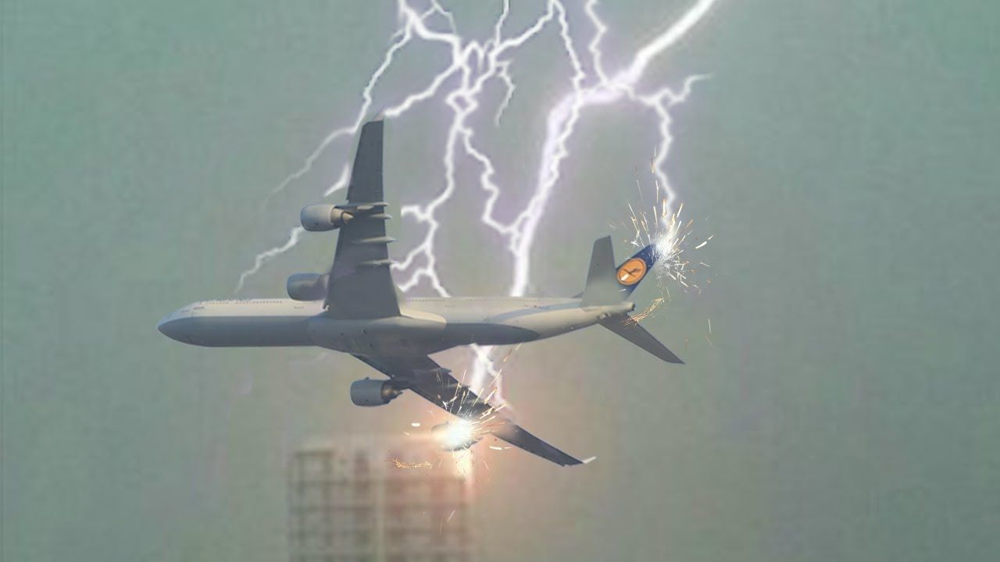
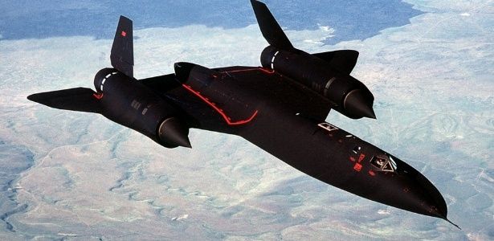

Aeroporto com a menor pista do mundo
Estamos falando de Saba (SAB), uma ilha no Caribe que pertencente às Antilhas Holandesas.
A curta pista tem apenas 400 metros e é a menor do mundo a receber voos comerciais.
Ali só pousam aviões turboélice de pequeno porte que fazem a ligação com as demais ilhas das Antilhas.
Saba também está na lista dos aeroportos mais perigosos e desafiadores do mundo.

Logo em seguida, vamos ver a maior pista do mundo.
Ela vem da China, na região Autônoma do Tibete, a pista de
pouso e decolagem do Aeroporto de Qamdo Bamda
(BPX) tem 5.500 metros de comprimento e está localizada a 4.334 de altitude,
sendo a segunda pista comercial mais alta do mundo.

Embora as aeronaves não tenham uma marcha à ré, os aviões conseguem andar para trás por conta própria com o uso dos reversos
dos motores. Criado para funcionar como freio durante o pouso, o reverso forma uma concha na parte traseira do motor e inverte
a direção do fluxo de ar. Com a aeronave parada em solo, o piloto pode acionar o reverso e aplicar potência no motor. Dessa forma,
o ar que dá impulso ao deslocamento do avião será direcionado para frente, e a aeronave se movimentará para trás. Essa técnica só
deve ser utilizada em último caso, quando não há nenhum trator de "push back" disponível e a aeronave precisa se movimentar. Isso
porque a manobra gasta muito combustível, pois o motor precisa estar com potência elevada. A força dos motores também polui e faz
muito barulho, e aumenta as chances de algum detrito que estava no chão ser jogado para dentro do motor.

Uma viagem de 18 horas e 30 minutos. Haja disposição! Este é o voo mais longo do mundo.
Operado pela Singapore Airlines num A350, ele percorre 15.200 km entre Singapura e Newark,
nos Estados Unidos. A Qantas buscava ultrapassar esta marca e assumir o posto de voo mais longo do mundo.
A empresa australiana estava realizando voos testes entre Nova York e Sydney numa viagem superior a 19 horas
como parte do projeto Sunrise, mas na semana passada anunciou que por enquanto desistiu dos voos superlongos.
No Brasil, o voo doméstico mais longo é entre Manaus e Rio de Janeiro. Já o internacional é a rota de São Paulo para
Doha com quase 15 horas de voo operado pela Qatar Airways.

Não dá nem para curtir o voo. O pouso ocorre menos de 1 minuto após a decolagem!
Esta rota super curta é operada pela Loganair entre as ilhas escocesas de Westray e Papa Westray.

Apesar de aparentemente estranho, os jatos comerciais têm buzina, mas a função dela é bem diferente da dos carros.
É um instrumento de comunicação, e não de alerta. Ela é acionada pelo tripulante apenas em terra, para chamar a
atenção da equipe mecânica. Outra diferença em relação à buzina dos carros é que o botão, identificado como "Ground",
"GND" ou "horn", fica em meio a outros comandos, e não no manche (como no volante do carro). Com som de alta frequência,
que lembra uma sineta, ela pode ser ouvida mesmo em meio a toda a barulheira de um aeroporto. O som varia de acordo com o
modelo e fabricante do avião. A caixa de som está localizada embaixo do avião, no vão onde o trem de pouso fica recolhido,
e lembra bastante as caixas acústicas portáteis usadas para ouvir música em casa.

Mesmo com todos os recursos tecnológicos de aproximação por instrumentos, em um determinado momento os pilotos precisam ter
contato visual com a pista para seguir para o pouso. Sem um equipamento tão simples como um limpador de para-brisa, em dias
de chuva seria quase impossível os pilotos pousarem. Por isso, se o equipamento estiver quebrado, o avião não pode decolar.
O limpador de para-brisa dos aviões tem a mesma função dos instalados nos carros: espalhar a água para aumentar a visibilidade.
Em um Boeing 737, os limpadores têm três configurações: intervalada (6 a 7 varreduras por minuto), baixa (160 varreduras) e alta
(250 varreduras). Além disso, o vidro também conta com uma película impermeabilizante que repele a água. O para-brisa também está
sempre aquecido, o que impede que fique embaçado. O limpador de para-brisa é acionado somente a baixa altitude. É que na maior parte
do voo, o avião está acima das nuvens, onde não há chuva e, portanto, o limpador não precisa ser usado.

Aconteceu em 1977 e ficou conhecido na história como o Desastre aéreo de Tenerife.
Dois aviões de passageiros já carregados chocaram frontalmente um contra o outro no meio da pista de aterragem
do aeroporto de Tenerife Norte.
Foram diversos os fatores que levaram ao acidente – entre os quais terrorismo e erro humano – que tirou a vida a
mais de 500 pessoas.
Os aviões comerciais foram desenhados com uma ideia em mente: a resistência aos relâmpagos pelos quais são atingidos
durante os voos. Cada aeronave é atingida por relâmpagos, em média, uma vez por ano, ou seja, sofre uma descarga elétrica
a cada mil horas de voo.
Para os aviões modernos, isto não é preocupante. O ultimo avião a sofrer um acidente devido a relâmpagos foi em 1963,
e desde então os aviões foram desenhados de modo a conseguirem ser atingidos por raios em segurança, de modo a dispersarem
a corrente elétrica e não se danificarem.

O avião mais rápido do mundo é o Lockheed SR-71 Blackbird, que pode voar a 3.500 quilômetros por hora.
Devido à fricção com o ar, as temperaturas médias das superfícies externas variavam de aproximadamente 240°C a 330°C
, sendo que algumas partes chegavam a 565°C. Isso impedia o uso de alumínio como material estrutural. Dessa forma o material
escolhido foi o titânio, 93% do peso estrutural era composto por ligas de titânio.
Algumas partes como as bordas da fuselagem, estabilizadores verticais, cones das entradas de ar e cone da cauda eram feitos
de materiais poliméricos compostos, que eram usados basicamente para reduzir a assinatura de radar.
